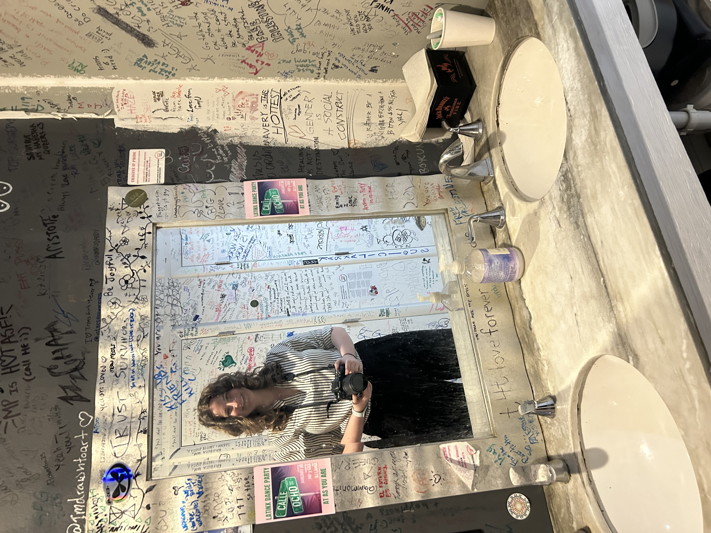

Radio Producer
As an Intramural Sports Supervisor, I am responsible for ensuring all game officials are assigned to their courts and that they are prepared and ready to go for each game. I also assist participants with any needs or questions they may have and am responsible for administering first aid if anyone gets injured.
As a Producer, I ensure our live radio broadcasts run smoothly. I help edit packages as they are shared with us by our reporters, and I teach others how to produce when they are interested.